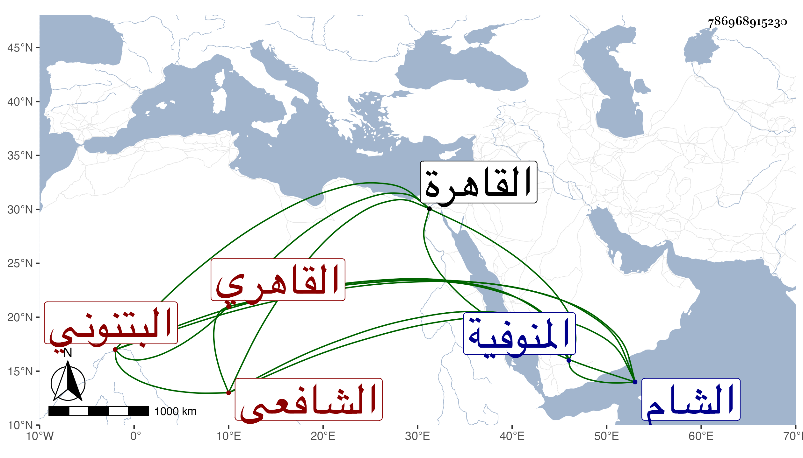

0902Sakhawi.DawLamic.ITO20230111-ara1.EIS1600.786968915230
Biography ID: 786968915230
1044
علي بن محمد بن الشرف عبد المؤمن نور الدين البتنوني ثم القاهري الشافعي ويعرف بدوادار الحنبلي . ولد في رابع عشر رمضان سنة أربع وعشرين وثمانمائة بالبتنون من المنوفية ونشأ بها ثم تحول إلى القاهرة فأقام عند أعمامه وتردد للجامع الأزهر فاشتغل فيه يسيرا ولازم البدر البدرشي ثم خدم البدر البغدادي الحنبلي إلى أن مات وفي أثناء ذلك حج معه غير مرة وسمع على الزين الزركشي والمقريزي وابن الطحان وابن بردس وابن ناظر الصاحبة ، وتنزل في بعض الجهات وكتب عن شيخنا في الإملاء ، وبعد موت البدر تردد للمحلي وكتب شرحه على المنهاج وغيره وصار يحضر درسه بل جلس مع الطلبة عند الشرواني وأشار عليه بالقراءة على الشرف عبد الحق السنباطي وكذا حمل عني أشياء من تصانيفي وغيرها كالقول البديع بعد أن كتبه بخطه وانتمى لأبي بكر بن عبد الباسط فنزله في مدرسة أبيه وأحسن إليه ودخل معه الشام لما ولى ابنه الجوالي صار يتحدث عنه فيها ولم يلبث أن استبد هو بالتكلم ورماه الناس عن قوس واحدة مع مزيد تودده واحتماله وتعبه بسبب من رافع فيه بحيث رسم عليه عدة أيام سيما وقد نقل أمره على جانم قريب السلطان لما جعل له النظر في تدبيره ثم بعده تمكن في الوظيفة بموت أكابر ديوانها وفاز فيما قيل بأسماء متوفرة بالدخول في ترك الحشريين بل والمزاحمة في غيرها وتقوى بإشراك أبي الطيب السيوطي معه في الضبط وبخدمته لرمضان المهتار مع تعلله بأمراض باطنية وقبل ذلك لزم التردد لأبي العباس بن الغمري والانتماء إليه بحيث زوج أصغر ولديه لابنته ومات أكبرهما فصبر كل ذلك وبدنه ضعيف .
